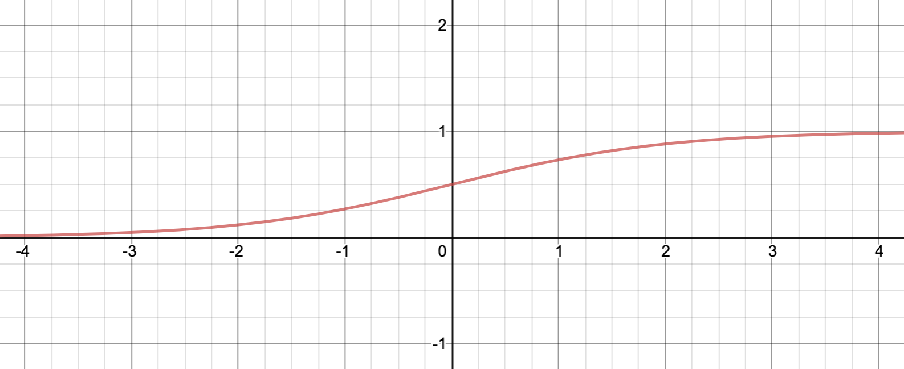

โดย ชิตพงษ์ กิตตินราดร | ธันวาคม 2562
คราวที่แล้วเราได้เรียนรู้ Linear Regression เพื่อสร้างโมเดลพยากรณ์ผลลัพธ์ที่เป็นตัวเลขต่อเนื่อง (Continuous number) คราวนี้เราจะมาสร้างโมเดลสำหรับพยากรณ์หมวดหมู่ หรือที่เรียกว่า Classification กันบ้าง
โจทย์ของเราคือการจำแนกสายพันธุ์ของพืชตระกูล Iris ออกเป็น 3 กลุ่ม คือ Sentosa, Versicolor, และ Virginica โดยมีข้อมูลอยู่ 4 Feature คือ ความยาวกลีบเลี้ยง (Sepal length), ความกว้างกลีบเลี้ยง (Sepal width), ความยาวกลีบดอก (Petal length), และความกว้างกลีบดอก (Petal width) โดยทั้งหมดมีหน่วยวัดเป็นเซนติเมตร
ภาพจาก Wikipedia | Creative Commons Attribution-Sharealike 3.0 License
เราจะใช้ชุดข้อมูล Iris plants dataset ซึ่งเป็นชุดข้อมูลยอดนิยมในการทดสอบโมเดลการจำแนกแบบหลายหมวดหมู่ โดยชุดข้อมูลนี้ถูกฝังอยู่ใน scikit-learn เรียบร้อยแล้ว สามารถเรียกใช้ได้เลยโดยการเรียก load_iris() ฟังก์ชัน ในคลาส datasets:
import numpy as np
import pandas as pd
import matplotlib.pyplot as plt
from sklearn import datasets
from sklearn.model_selection import train_test_split
from sklearn.linear_model import LogisticRegression
# Load the iris data
iris = datasets.load_iris()
เมื่อโหลดแล้วลองดูโครงสร้างและคำอธิบายข้อมูล:
print(iris.keys())
print(iris["DESCR"])
print("Feature names are: ", iris["feature_names"])
print("Target names are: ", iris["target_names"])
keys method ของ iris object จะเรียกดู Dictionary key ของชุดข้อมูล ซึ่งประกอบด้วย:
dict_keys(['data', 'target', 'target_names', 'DESCR', 'feature_names', 'filename'])
หมายความว่าถ้าเราเรียกดู Keys เหล่านี้ ก็จะเจอข้อมูลใน Key นั้นๆ เช่น ถ้าเราอยากรู้ว่าหมวดหมู่ที่จะพยากรณ์ มีอะไรบ้าง ก็เรียก iris["target_names"] ก็จะได้:
['setosa' 'versicolor' 'virginica']
แนะนำให้เรียก iris["DESCR"] เพื่อดูคำอธิบายชุดข้อมูลด้วย จะได้เข้าใจที่มาที่ไป ลักษณะ และจำนวนตัวอย่างข้อมูล:
Iris plants dataset
--------------------
**Data Set Characteristics:**
:Number of Instances: 150 (50 in each of three classes)
:Number of Attributes: 4 numeric, predictive attributes and the class
:Attribute Information:
- sepal length in cm
- sepal width in cm
- petal length in cm
- petal width in cm
- class:
- Iris-Setosa
- Iris-Versicolour
- Iris-Virginica
:Summary Statistics:
============== ==== ==== ======= ===== ====================
Min Max Mean SD Class Correlation
============== ==== ==== ======= ===== ====================
sepal length: 4.3 7.9 5.84 0.83 0.7826
sepal width: 2.0 4.4 3.05 0.43 -0.4194
petal length: 1.0 6.9 3.76 1.76 0.9490 (high!)
petal width: 0.1 2.5 1.20 0.76 0.9565 (high!)
============== ==== ==== ======= ===== ====================
:Missing Attribute Values: None
:Class Distribution: 33.3% for each of 3 classes.
:Creator: R.A. Fisher
:Donor: Michael Marshall (MARSHALL%PLU@io.arc.nasa.gov)
:Date: July, 1988
The famous Iris database, first used by Sir R.A. Fisher. The dataset is taken
from Fisher's paper. Note that it's the same as in R, but not as in the UCI
Machine Learning Repository, which has two wrong data points.
This is perhaps the best known database to be found in the
pattern recognition literature. Fisher's paper is a classic in the field and
is referenced frequently to this day. (See Duda & Hart, for example.) The
data set contains 3 classes of 50 instances each, where each class refers to a
type of iris plant. One class is linearly separable from the other 2; the
latter are NOT linearly separable from each other.
พอเข้าใจข้อมูลแล้ว ก็ต้องเตรียมข้อมูลให้อยู่ในรูปแบบที่จะนำไปให้โมเดลฝึกได้ ซึ่งโดยหลักการคือการกำหนด Matrix ข้อมูลให้อยู่ในตัวแปร X ส่วน Vector เป้าหมายให้อยู่ในตัวแปร y โดยสำหรับชุดข้อมูลที่ฝังอยู่ใน scikit_learn เราสามารถเรียก Method .data และ .target ได้เลย
X = iris.data
y = iris.target
print("X_shape shape is:", X.shape)
print("y_shape shape is:", y.shape)
สองบรรทัดสุดท้าย เป็นการตรวจสอบมิติของข้อมูลทั้ง X และ y ซึ่งจะได้:
X_shape shape is: (150, 4)
y_shape shape is: (150,)
แปลว่า X เป็น Matrix ขนาด (150, 4) คือมี 150 แถวเท่ากับจำนวนตัวอย่าง และ 4 คอลัมน์เท่ากับจำนวน Feature ส่วน y เป็น Column vector ขนาด 150 ซึ่งจะต้องเท่ากับจำนวนแถวของ X matrix
อนึ่ง เราใช้ตัวพิมพ์ใหญ่ เช่น X เวลาแทน Matrix ส่วน Vector ใช้ตัวพิมพ์เล็กเช่น y เพื่อทำให้ชัดเจนว่าข้อมูลอยู่ในประเภทอะไรทางคณิตศาสตร์
จากนั้นเราจะแบ่งข้อมูลออกเป็น Train set กับ Test set โดยการสุ่มด้วยฟังก์ชัน train_test_split ในโมดูล model_selection โดยฟังก์ชันนี้จะ Return ตัวแปร 4 ตัว ได้แก่ Matrix X เพื่อเทรน, Matrix X เพื่อทดสอบ, Vector Y เพื่อเทรน, และ Vector Y เพื่อทดสอบ ตามลำดับ ดังนั้นให้เรากำหนดตัวแปรทั้ง 4 เมื่อเรียกฟังก์ชันนี้
# Split the data into train and test set
X_train, X_test, y_train, y_test = train_test_split(X, y, random_state=42)
print("X_train shape is:", X_train.shape)
print("y_train shape is:", y_train.shape)
print("X_test shape is:", X_test.shape)
print("y_test shape is:", y_test.shape)
สังเกตว่า train_test_split มี Argument X, y ซึ่งก็คือชุดข้อมูลที่เราเพิ่งเตรียม และมี random_state ซึ่งทำให้เราสามารถกำหนดได้การสุ่มแต่ละครั้งได้ผลออกมาเหมือนกัน ซึ่งเป็นประโยชน์ในการทดสอบโมเดล เพราะถ้าเราเรียกฟังก์ชันแต่ละครั้งแล้วผลออกมาไม่เหมือนกัน คือแต่ละครั้งก็สุ่มใหม่ เราจะไม่สามรถควบคุมตัวแปรในการทดสอบโมเดลได้
วิธีการกำหนด random_state คือการใส่ตัวเลขจำนวนเต็มอะไรก็ได้ลงไป ถ้าดูหนังสือหรือโค้ดคนอื่นจะเห็นว่าบางทีจะใส่เลข 42 อันนี้เป็น Meme ซึ่งมาจากนิยายวิทยาศาสตร์เรื่อง A Hitchhiker's Guide to the Galaxy ของ Douglas Adams
ก่อนจะสร้างโมเดลก็น่าจะลอง Visualise ข้อมูลให้เห็นภาพสักหน่อย ในที่นี่เราจะสร้าง Scatterplot matrix ซึ่งแสดงความสัมพันธ์ระหว่างข้อมูลแต่ละ Feature และจำแนกจุดที่เป็นตัวแทนของข้อมูลที่อยู่ในหมวดหมู่แต่ละหมวดจาก 3 หมวด โดยการใช้สีที่ไม่เหมือนกัน
# Plot the data
pd.plotting.scatter_matrix(iris_df, c=y_train, figsize=(12,12), marker="o")
ได้ผลแบบนี้:
วิธีอ่าน Scatterplot matrix มีดังนี้:
สำหรับเรา ประโยชน์หนึ่งจากการอ่าน Scatterplot matrix คือการสร้างความเข้าใจในภาพรวมว่าชุดข้อมูลนี้น่าจะ "ยาก" หรือ "ง่าย" ในการสร้างโมเดล โดยถ้าข้อมูลแต่ละ Label แยกจากกันค่อนข้างชัด การสร้างโมเดลก็จะค่อนข้างง่ายและแม่นยำ
และแล้วก็เกือบถึงเวลาที่จะฝึกโมเดลให้เข้ากับชุดข้อมูล แต่ก่อนหน้านั้นเรามาทำความเข้าใจว่า Algorithm ที่เราจะใช้นั้นทำงานอย่างไร โดย Algorithm ที่เราเลือกใช้คือ Logistic Regression ชื่ออาจจะฟังดูเหมือน Regression ที่มีเป้าหมายพยากรณ์ค่าต่อเนื่อง แต่ในความเป็นจริงไม่ได้เป็นอย่างนั้น เราลองมาดูกันว่าโมเดลนี้ทำงานอย่างไร
ใน Classification model เราต้องการให้ y มีคำตอบ คือ 0 หรือ 1 เท่านั้น ซึ่งหมายความว่า "ไม่ใช่" หรือ "ใช่" (ตอนนี้กำหนดให้มีสองคำตอบไปก่อน การใช้หลักการเดียวกันมาใช้กับการจัดหมวดหมู่ที่มีหลายคำตอบ ทำได้โดยการใช้ Softmax function ซึ่งจะกล่าวถึงภายหลัง)
แต่ในความเป็นจริง เราไม่สามารถมั่นใจอะไรได้ร้อยเปอร์เซ็น ว่าคำตอบคือ "ไม่ใช่" หรือ "ใช่" ดังนั้น สิ่งที่เราต้องการ คือเราจะสร้าง Hypothesis function ที่ให้ค่าความเป็นไปได้ ที่คำตอบจะคือ "ไม่ใช่" หรือ "ใช่" โดยกำหนดขอบเขตการตัดสินใจ (Decision boundary) ไว้ที่ 0.5 ซึ่งจะทำให้เราได้ขอบเขตการตัดสินใจดังนี้:
โดย คือ Hypothesis function ที่มี x เป็น Input ซึ่งอยู่ในรูปของ:
อ่านว่า Sigma และ อ่านว่า Sigmoid z ซึ่ง นี้เป็นฟังก์ชันที่เรียกว่า Sigmoid function หรือ Logistic function ซึ่งเป็นที่มาของชื่อ Logistic regression นั่นเอง
Sigmoid function มีหน้าตาอย่างนี้:

นั่นหมายความว่า:
อนึ่ง สำหรับใครที่สนใจจะเขียน Algorithm เอง จะควรจะแปลง ให้เป็น Vectorised form เพื่อเร่งความเร็วในการคำนวน ซึ่งมีวิธีคือหาการ Dot product ของ W transpose และ X (ทั้งคู่เป็น Matrix) ดังนั้นเราจะได้ Sigmoid function ดังนี้:
เมื่อได้ Hypotheses function แล้ว หน้าที่ของเรา คือการหาค่า w ที่จะทำให้ค่าความคลาดเคลื่อนระหว่าง กับ นั้นน้อยที่สุด การที่จะทำให้ค่าความคลาดเคลื่อนน้อยที่สุดดังกล่าว ก็ต้องอาศัย Cost function และการหา Gradient descent ของ Cost function เหมือนที่เราเคยทำ
สำหรับ Logistic regression เราจะใช้ Cost function ดังนี้:
ลองทำความเข้าใจเงื่อนไขของ Cost function ด้านบน พิจารณาว่าหน้าที่ของ Cost function คือการหาค่าตัวแปรที่จะส่งผลให้ Cost นั้นต่ำที่สุด ซึ่งแบ่งได้เป็น 2 กรณี คือเมื่อ y เท่ากับ 1 และ y เท่ากับ 0
โดยในกรณีของ y เท่ากับ 1 หากเราได้ Hypothesis function จะทำให้ Cost function ซึ่งก็คือ ซึ่งมีค่าน้อยที่สุดที่จะเป็นไปได้ ดังนั้นเราจึงใช้ เป็นตัวแทนของ Cost function ในกรณี
ส่วนในกรณีของ y เท่ากับ 0 หากเราได้ Hypothesis function จะทำให้ Cost function ซึ่งก็คือ ซึ่งมีค่าน้อยที่สุดที่จะเป็นไปได้ ดังนั้นเราจึงใช้ เป็นตัวแทนของ Cost function ในกรณี
เงื่อนไขทั้งสองแบบ สามารถนำมารวมกันเป็นสมการเดียวได้ว่า:
นำ Cost function นี้มาใส่ในรูปแบบ Cost function ของ Linear regression:
จะได้ Cost function เต็มรูปแบบ คือ:
หรือใน Vectorised form ดังนี้:
เชื่อหรือไม่ว่าอนุพันธ์ของ ของ Logistic regression cost function นั้นเหมือนกับอนุพันธ์ ของ Linear regression cost function:
ส่วน Vectorized version ก็คือ:
ดังนั้น วิธีการอับเดตตัวแปรจึงทำเหมือน Linear regression ทุกประการ
Algorithm ของเราสามารถให้คำตอบสำหรับปัญหาที่มีคำตอบแค่ 2 ค่า คือ 1 กับ 0 เรียกว่า Binary classification แล้วถ้าคำตอบมีหลายค่า เช่นในโจทย์ของเรา ที่ต้องการจำแนกดอก Iris ออกเป็น 3 สายพันธุ์ล่ะ เราเรียกปัญหาแบบนี้ว่า Multiclass classification
Logistic Regression สามารถให้คำตอบปัญหา Multiclass classification โดยการแก้ไขรายละเอียดของกลไกเล็กน้อย ซึ่งจบลงที่การใช้ Softmax function ตอน Output โดยมีหลักการและขั้นตอนดังนี้:
1) คำนวนหาผลลัพธ์ Linear function z ของแต่ละ Class k:
เช่นกรณีของเรา มี k = 3 เราจะได้ , , และ ของข้อมูลแต่ละรายการ
2) นำ ไปประกอบกันใน Softmax function แทน Logistic function เดิม ดังนี้:
kk โดยเทียบกับคะแนน Linear function ของแต่ละ Class ของรายการนั้นโดย Softmax จะเลือกพยากรณ์ Class ที่ได้คะแนนความเป็นไปได้สูงที่สุด
ถ้าอ่านแล้วงง ลองโค้ด Softmax function ใน Python ดู:
z = [1, 2, 3]
p = np.exp(z)/np.sum(np.exp(z))
เมื่อเรียก p จะได้ผลว่า array([0.09003057, 0.24472847, 0.66524096]) แปลว่าถ้า Linear function z ของ Class แรก ให้ผลเท่ากับ 1 ความเป็นไปได้ของ Class นี้จะเท่ากับ 9% เมื่อเทียบกับ Class ที่สอง (2 --> 24.47%) และ Class ที่สาม (3 --> 66.52%) ดังนั้น Softmax function จะเลือก Class 3 เป็นคำตอบ
3) Algorithm จะนำ ไปคำนวนใน Cost function ที่ดัดแปลงจากเดิมเล็กน้อย เรียกว่า Cross entropy cost function เพื่อหา Global minimum ที่จะทำให้ความต่างของค่าที่พยากรณ์กับค่าจริงมีน้อยที่สุด:
i จะอยู่ใน Class k ซึ่งจะมีค่า 1 หรือ 04) หาอนุพันธ์ในกระบวนการ Gradient descent โดยใช้สูตรเดิม:
อนึ่ง ฟังก์ชัน LogisticRegression ใน scikit-learn จะเลือกใช้ Softmax function โดยอัตโนมัติอยู่แล้ว โดยดูจากข้อมูล Label y ของเรา ซึ่งสะดวกมาก ไม่ต้องทำอะไรเพิ่มแล้ว แค่เรียกฟังก์ชัน
ตอนนี้เราก็พร้อมแล้วในการสร้างโมเดล โดยเรียก LogisticRegression ฟังก์ชัน และพ่วง Method .fit เพื่อสร้างเทรนโมเดลไปเลย
# Train the model
logreg = LogisticRegression(max_iter=200, random_state=42).fit(X_train, y_train)
จะเห็นว่า LogisticRegression ฟังก์ชัน มี Argument max-iter อยู่ด้วย Argument นี้ทำหน้าที่ควบคุม Hyperparameter ของโมเดล โดยเราสามารถกำหนดว่าจะให้ Algorithm (เรียกใน scikit-learn ว่า "Solver") ทำงานกี่ครั้ง ในลักษณะเดียวกับที่ Gradient descent อับเดต Parameter ซ้ำไปเรื่อยๆ เพื่อให้ Cost function ลดลงทุกๆ รอบ
อันที่จริง แต่ละโมเดลจะมี Argument แบบนี้มากมาย เช่น LogisticRegression มี Argument ดังนี้ (ดูจากเอกสารอ้างอิงของ scikit-learn):
class sklearn.linear_model.LogisticRegression(penalty='l2', dual=False, tol=0.0001, C=1.0, fit_intercept=True, intercept_scaling=1, class_weight=None, random_state=None, solver='lbfgs', max_iter=100, multi_class='auto', verbose=0, warm_start=False, n_jobs=None, l1_ratio=None)
เราจะพูดถึง Hyperparameter เหล่านี้ในหัวข้อถัดไป ในขั้นนี้เพียงแค่ให้รู้ก่อนว่าเราสามารถกำหนดค่าต่างๆ เพื่อปรับแต่งโมเดลของเราได้ในที่นี้
เมื่อเทรนโมเดลแล้ว เราก็มีประเมินความแม่นยำกัน:
# Evaluate the model's accuracy
print("Train set accuracy = " + str(logreg.score(X_train, y_train)))
print("Test set accuracy = " + str(logreg.score(X_test, y_test)))
ได้ผลว่า:
Train set accuracy = 0.9642857142857143
Test set accuracy = 1.0
นั่นคือเมื่อเทรนกับ Train set ได้ความแม่นยำ 96.42% ส่วนเมื่อนำมาทดสอบกับ Test set ได้ความแม่นยำถึง 100% ทีเดียว
สำหรับวิธีการคำนวนความแม่นยำของ Logistic regression สูตรนั้นง่ายมาก คือคำนวนว่าสัดส่วนระหว่าง ที่ให้ค่าตรงกับ ที่แท้จริงนั้น เป็นเท่าไหร่
มาลองดูกันว่าเวลาเราต้องการพยากรณ์จริงๆ นั้นทำอย่างไร สมมุติว่าเราไปเจอดอก Iris ที่อยากรู้ว่าเป็นสายพันธุ์ไหน เราจึงไปวัด Feature ทั้ง 4 มา ได้ว่า:
เราจะต้องใส่ข้อมูลนี้ลงไปในให้โมเดลพยากรณ์ โดยทำข้อมูลให้อยู่ในรูปแบบและมิติเดียวกันกับ X ที่เอาไว้เทรน ซึ่งถ้าจำได้ เราเคยหามิติของ X ไว้ ได้ดังนี้:
X_shape shape is: (150, 4)
คือเป็น Array ขนาด 150 แถว 4 คอลัมน์ โดยแต่ละแถวคือ 1 รายการ ดังนั้น X ใหม่ของเรา ตั้งชื่อว่า X_new จีงจะต้องเป็น Array มิติ (1, 4) ซึ่งเขียนใน Python ได้ว่า np.array([[6, 2.5, 4, 1.5]]):
# Make a prediction
X_new = np.array([[6, 2.5, 4, 1.5]])
y_pred = logreg.predict(X_new)
y_pred_prob = logreg.predict_proba(X_new)
print("Prediction:", y_pred, "with the probability array:", y_pred_prob)
print("Predicted target name:", iris["target_names"][y_pred])
ได้คำตอบคือ:
Prediction: [1] with the probability array: [[0.01372466 0.91809317 0.06818217]]
Predicted target name: ['versicolor']
นั่นคือโมเดลได้พยากรณ์ว่าดอก Iris ดอกนี้ เป็นสายพันธุ์ Versicolor โดยมีความมั่นใจ 91.8% อย่างไรก็ตามก็มีความเป็นไปได้ที่จะเป็นสายพันธุ์ Setosa 1.37% และ Virginica 6.81%
ถ้าดูโค้ดแล้วงง ลองพิจารณารายละเอียดดังนี้:
.predict_proba หมายว่าว่า ให้พยากรณ์โดย Output ออกเป็น Array ของความเป็นไปได้iris["target_names"][y_pred] จึงให้ผลออกมาเป็นชื่อสายพันธุ์ได้ ถ้าจำได้ตอนต้น เรารู้ว่าชุดข้อมูลนี้ได้เตรียม Dictionary key ที่ชื่อ target_names ไว้ให้ โดยมีค่าว่า ['setosa' 'versicolor' 'virginica'] คำสั่งนี้คือการเรียกค่าของ Key target_names ลำดับที่ [y_pred] ซึ่งในที่นี้คือ [1] นั่นเองเป็นอันว่าเราสร้างโมเดล Logistic regression เพื่อพยากรณ์ปัญหา Multiclass classification สำเร็จ ยังมีเรื่องสำคัญที่เรายังไม่ได้พูดถึง ที่ส่งผลต่อความแม่นยำของโมเดล ดังนี้:
ซึ่งจะเป็นหัวข้อของบทต่อไป
หน้าแรก | บทที่ 3 Linear Regression Programming | บทที่ 5 Overfitting and Regularisation